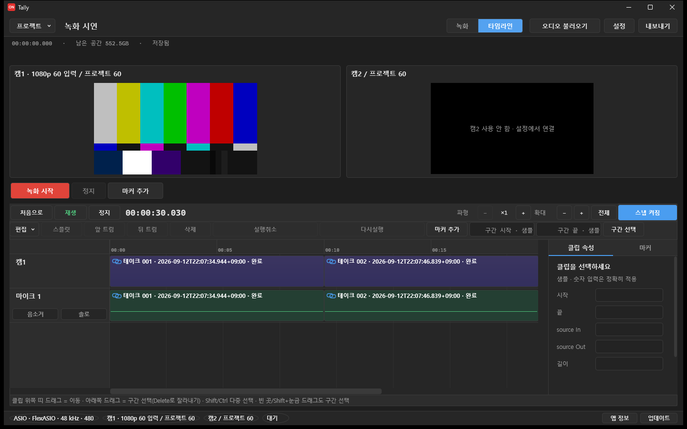

Tally 탤리
웹캠 2대와 ASIO 오디오를 한 번에 녹화하고 바로 잘라내는 프로그램
- 요구 사항
- Windows 10 / 11 (64비트) · ASIO 오디오 인터페이스 · NVIDIA GPU
- 기타
- 바뀐 점 · GitHub 릴리스
주요기능
- 웹캠 1~2대(1080p)와 ASIO 마이크 최대 8개를 한 프로젝트에 동시 녹화
- 녹화를 멈추면 바로 타임라인에서 재생 · 자르기 · 이동 · 구간 삭제 · 마커
- 재생헤드 위치부터 이어서 녹화 (비어 있는 구간은 검정 화면으로 내보내기)
- 캠별 영상, 마이크별 오디오, 최종 MP4 내보내기
비용 : 완전 무료

설치할 때 Windows가 ‘알 수 없는 게시자’ 경고를 띄웁니다. 추가 정보 → 실행을 누르면 됩니다. 아직 코드 서명을 하지 않아서 그렇습니다.
오픈소스와 고지
이 프로그램은 LGPL v3-or-later로 배포되는 FFmpeg 공유 라이브러리를 사용합니다. 같은 릴리스의 대응 소스는 GitHub 릴리스에 함께 올립니다. 라이선스·제3자 고지